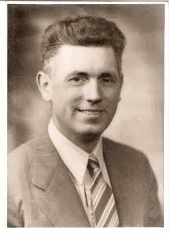
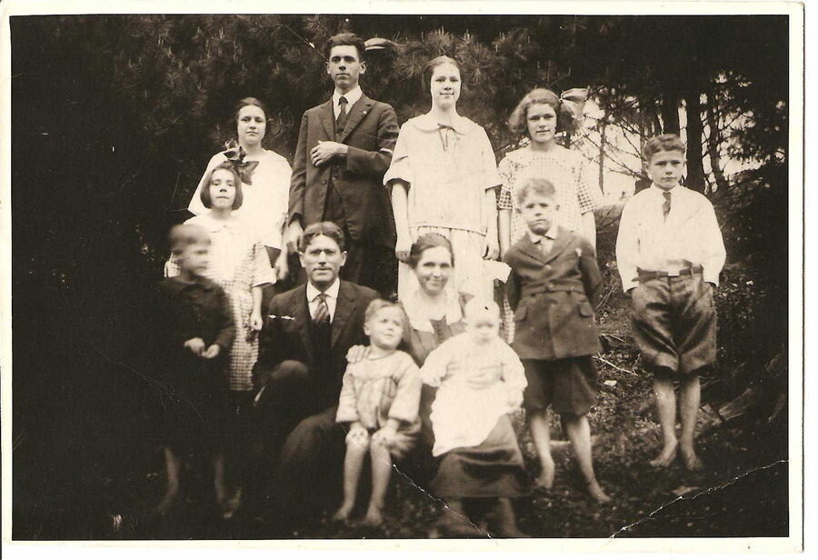
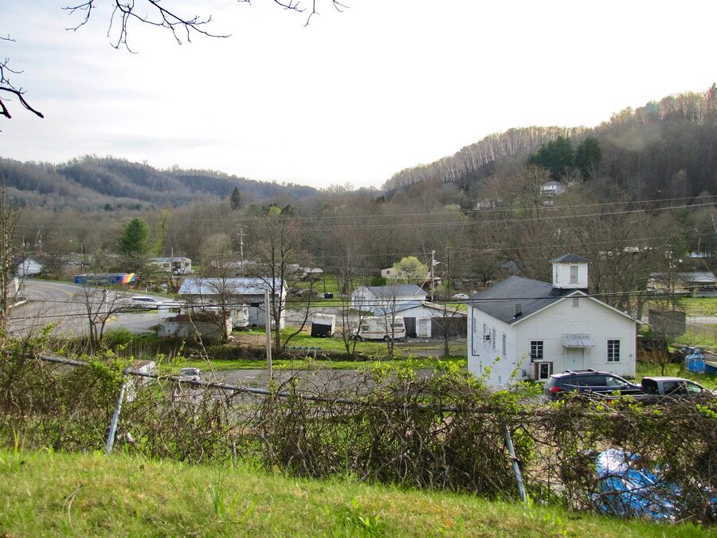
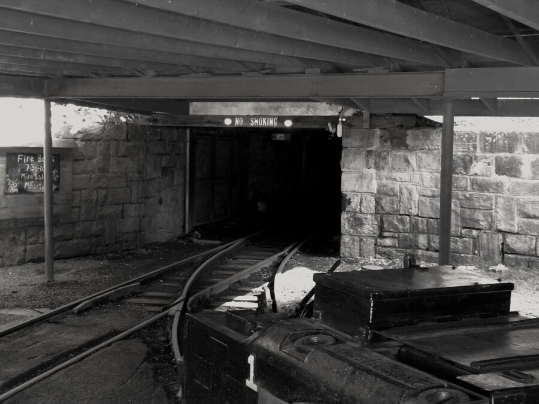

Dallas Cecil McKinney
8 December 1904 – 1 December 1958
Quick Facts
Immediate Family
Parents
Wesley Mathew McKinney (1881–1966) DOCUMENTEDGenettie Ellen Canaday (1885–1970) DOCUMENTED
Children
Jackson Ahmeek "Jack" McKinney (1924–2014) SUPPORTEDEdgar Alba "Ed" McKinney (1928–2018) SUPPORTED
Edna Ellen McKinney Graff (1931–2002) SUPPORTED
Ruth Laverne McKinney (1932–2018), married Lawrence Richard Shamblen, later Tom McGregor FAMILY ACCOUNT
Siblings
- Marcil Dare McKinney (Harvey), b. 8 Dec 1904, carried as his twin UNPROVED
- Garnet Dare McKinney (Butler), b. 13 Sep 1908 SUPPORTED
- Dorothy Dare McKinney (Smith), b. 3 Nov 1910 SUPPORTED
- Clynis Dare McKinney, b. about 1912 UNPROVED
- Thelma Dare McKinney, b. about 1914 SUPPORTED
- Leonard Oxley McKinney, b. 1916 SUPPORTED
- Wesley Arthur McKinney, b. about 1918 SUPPORTED
- Allen Joseph McKinney, b. about 1920 SUPPORTED
- Forest Oliver McKinney, b. about 1922–23 SUPPORTED
Ten children in all. The twin is family tradition: the 1910 census lists Dallas at 5 but "Macil" at 3, and FamilySearch splits her into two different daughters. The censuses also disagree on Clynis, even on whether Clynis was a boy or a girl.
On Family Tree Sites
Couple Folder
Life Timeline
1904 · age 0
Born (8 Dec), son of Wesley and Genettie McKinney, Daniels (family: Lester), Raleigh Co., WV DOCUMENTED
1910 · age 5
In his parents' household, father a schoolteacher, Forest Hill, Summers Co., WV DOCUMENTED
1920 · age 15
With his parents' family, Beckley, Raleigh Co., WV DOCUMENTED
1923 · age 18
Married Laverne Hurt (10 Apr), Ironton, Lawrence Co., Ohio FAMILY ACCOUNT
1924 · age 19
Son Jackson Ahmeek "Jack" born (21 Jan), Beckley, WV SUPPORTED
1928 · age 23
Son Edgar born (16 Oct; 1929 in some trees), Beckley, WV SUPPORTED
1930 · age 25
Family of four in the census, Town district, Raleigh Co., WV DOCUMENTED
1931 · age 26
Daughter Edna Ellen born (12 Jan), West Virginia SUPPORTED
1932 · age 27
Daughter Ruth Laverne born (10 Jul), Beckley, WV FAMILY ACCOUNT
1940 · age 35
Census: carpenter, family of six; draft registration (16 Oct), Town district and R-1 Beckley, Raleigh Co., WV DOCUMENTED
after 1945 · age 40s
Moved the family north, Cincinnati, Ohio FAMILY ACCOUNT
1955 · age 50
Daughter Ruth married Lawrence Richard Shamblen, Cincinnati area FAMILY ACCOUNT
1958 · age 53
Died (1 Dec); buried Spring Grove, Cincinnati, Ohio DOCUMENTED
Life Story
Dallas Cecil McKinney was born on 8 December 1904 in Raleigh County, West Virginia, the son of Wesley Mathew McKinney and Genettie Ellen Canaday. His West Virginia birth record, and his own hand on his 1940 draft card, give the place as Daniels; the family has always said Lester. Family tradition makes him the twin of his sister Marcil Dare, the first of ten children, though the records have not yet settled that.
His father was a schoolteacher, and in 1910 the young family lived at Forest Hill in Summers County. By 1920 they were in Beckley, in the heart of the southern coalfields, where the county seat was growing fast around the mines and the railroad.
On 10 April 1923, by the family record, Dallas married Laverne Hurt of Beckley across the river in Ironton, Ohio. He was eighteen and she was sixteen. Their children were Jack, born in 1924; Edgar, in 1928; Edna Ellen, in 1931; and Ruth Laverne, in 1932. The 1930 and 1940 censuses find the family in the Town district of Raleigh County, with Dallas working as a carpenter in 1940.
In October 1940, at thirty-five, Dallas registered for the draft at Mt. Tabor, near Beckley. The registrar wrote him down as five foot ten, 180 pounds, with brown eyes, brown hair and a dark complexion. The card names his employer as the Anderson Air Plane School in Los Angeles, a trade school for aircraft builders, but it gives his home as Beckley, and no record puts him in California. No military service has been found for him.
Sometime after the war, Dallas moved the family north to Cincinnati, where, the family says, he worked in civilian trades and manufacturing. His grandson remembers him fondly. Dallas died in Cincinnati on 1 December 1958, at fifty-three, of a stroke by the family's account. He was buried at Spring Grove Cemetery under a flat stone with a cross at the top and the Masonic square and compass between the years. Laverne was laid beside him in 1986.
More of Dallas's story will be added as family members share their memories.
Photo Gallery






Sources and Evidence
- West Virginia Births, 1853–1921: Dallas Cecil McKinney, b. 8 Dec 1904, Daniels, Raleigh County; father Wesley Matthew McKinney, mother Genettie Ellen Canaday (seen as a record match on Geni and MyHeritage) DOCUMENTED
- 1910 U.S. census, Forest Hill, Summers County, WV, sheet 10-B, family 149: Wesley M. McKinney, 28; Genettie, 25; Dallas, 5; "Macil", 3; Garnet, 1 (image in the couple's Documents folder) DOCUMENTED
- 1920 U.S. census, Beckley, Raleigh County, WV, with his parents (image in the couple's Documents folder) DOCUMENTED
- 1930 U.S. census, Town district, Raleigh County, WV, ED 23, sheet 25-A, line 29: Dallas C. McKinney, 24; wife Lavern, 23; sons Jackson A., 6, and "Edward A.", 1 (image in the couple's Documents folder) DOCUMENTED
- 1940 U.S. census, Town district (Wickham), Raleigh County, WV: Dallas, carpenter, with Laverne and children Jack, Edgar, Edna and Ruth (image in the couple's Documents folder) DOCUMENTED
- WWII draft registration card, Dallas C. McKinney, serial 2031, registered 16 Oct 1940, Mt. Tabor precinct, Local Board No. 1, Raleigh County: born 8 Dec 1904, Daniels; residence R-1, Beckley; contact Mrs. Laverne McKinney (wife); employer Anderson Air Plane School, Los Angeles; 5 ft 10, 180 lb, brown eyes and hair. MyHeritage https://www.myheritage.com/research/record-20912-18728048/dallas-c-mckinney-in-united-states-world-war-ii-draft-registrations DOCUMENTED
- Ohio Deaths: Dallas Cecil McKinney, d. 1 Dec 1958, Hamilton County, certificate 1958178869 (index entry; certificate not yet read). Social Security Death Index: b. 8 Dec 1904, d. Dec 1958 DOCUMENTED
- Spring Grove Cemetery, Cincinnati: flat stone "DALLAS C. McKINNEY / 1904 [square and compass] 1958" with a cross (photo in the couple's Pictures folder); BillionGraves burial index and Spring Grove Cemetery Index list both Dallas and Laverne there DOCUMENTED
- Marriage, 10 Apr 1923, Ironton, Ohio: family record, Geni and WeRelate entries and Tricia's Ancestry tree; the Lawrence County record itself has not been found FAMILY ACCOUNT
- A grandson's email, 13 Oct 2026: Dallas died of a stroke; remembered fondly. Tricia's Ancestry tree gives the cause as cerebral hemorrhage FAMILY ACCOUNT
- A compiled McKinney descendant database on a family website (uncited): Dallas b. 8 Dec 1904 Lester, d. 1 Dec 1958 Cincinnati, buried 4 Dec 1958; married "Leverne" Hurt 10 Apr 1923, Ironton, Ohio UNPROVED
- Couple profile, Dallas Cecil McKinney × Laverne Hurt, and the couple story "Nana" (family accounts and research notes) FAMILY ACCOUNT
Grades: DOCUMENTED an original record says it · SUPPORTED several records point to it · FAMILY ACCOUNT the family's own telling · UNPROVED a lead, not proved.
Research Notes and Open Questions
- Birthplace: Daniels (birth record and his own draft card) or Lester (family account and several trees)? Two records now favour Daniels; the family profile still says Lester, pending a family decision.
- The twin: Marcil Dare is carried as his twin, but the 1910 census gives her age as 3 to his 5, and FamilySearch has "Macil Dara" (b. 1902) and "Maysel Dora" (1906–1989) instead. The 1904 Raleigh County birth register would settle it.
- The 1923 Ironton marriage record has not been found. Lawrence County, Ohio, marriage records for April 1923 are the place to look.
- Son Jack's birth is given as 21 Jan 1924 (family profile, 1930 census age 6) and 21 Jan 1923 (Tricia's Ancestry tree). 1923 would be before the April 1923 marriage, so 1924 is used here.
- One Ancestry tree entry gives Dallas a death date of 26 Jun 1973. His stone (1904–1958), the Ohio death index and the Social Security index all say 1958, so the 1973 date is wrong.
- Burial: a compiled McKinney database says "Sugar Grove Cemetery" on 4 Dec 1958; the stone photo and cemetery indexes say Spring Grove. Spring Grove is used; the burial date still needs a Spring Grove record.
- Anderson Air Plane School, Los Angeles: no Los Angeles directory lists him in 1940–41. Whether he worked for the school away from home, or as an instructor, is unknown.
- No Masonic lodge record has been found to match the square and compass on his stone.
- When the family moved to Cincinnati is not pinned down (between 1940 and 1958). The 1950 census and his 1958 Ohio death certificate (occupation, address) are the next records to read.
- 1930 census ages (Dallas 24, Laverne 23) run young against their birth dates, and the second son is written "Edward A." for Edgar.
DNA
No DNA matches linked yet.